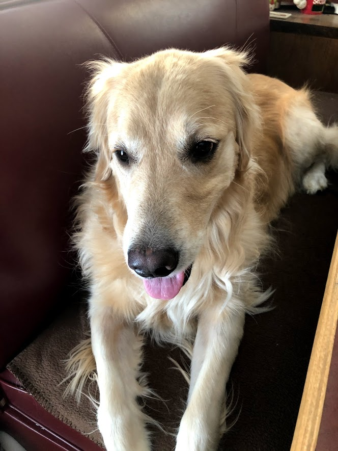

My COVID Closeup
Index
About
Portfolio
April

A picture of my dog, Gracie, sitting on the bench near the back door of the house. Taken after my school was shut down, and classes were completely remote.
Previous Image
Next Image